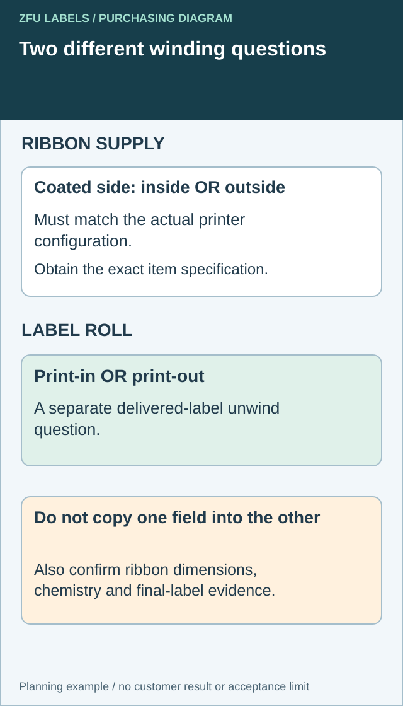

A replacement black ribbon can match the usual width and still leave an important compatibility question unanswered. Confirm its coated side separately from its chemistry and physical dimensions before authorising a substitution.
Approve the printer, supplies and template as a complete backup kit. A second machine is useful capacity only when the intended labeling job has relevant evidence on that actual combination.

Approve the ribbon as a specified consumable
Begin with the current printer configuration and an approved supply reference. Do not infer ribbon compatibility from its black colour, a photograph of the roll or the fact that it fits a spindle. A replacement description needs the coating orientation as well as the material and physical format.


Ribbon wound with its coated side outside is a different supply description from ribbon coated inside. Neither term means that the finished label must be wound print-in or print-out. Those are two separate rolls and two separate drawings. Keep the label unwind instruction out of the ribbon coating field.
Zebra's published ZT231 manual identifies outside-coated ribbon for that printer. This is a model-specific example, not a rule for every thermal-transfer machine. Consult the actual equipment instructions and supplier before purchasing or loading a substitute; this guide supplies no loading path or home-made identification test.
| Substitution field | Approved reference | Proposed replacement |
|---|---|---|
| Printer scope | Actual model and installed configuration | Confirm the same applicable scope |
| Coated side | Explicit inside/outside specification | Obtain a written value, not a visual guess |
| Physical format | Required width, length and core arrangement | Compare every relevant dimension |
| Print combination | Ribbon reference plus final label surface | Identify chemistry and any changed surface |
| Evidence | Identified approved output and required checks | State what the proposed combination still needs |
If a field is absent, keep the substitution unresolved rather than copy the usual product's value into it. A reseller's shared product family is not evidence that every variant has the same winding or core. Ask which exact item will be supplied and retain that item identity with the order.
Physical compatibility also does not establish durability. Once the supply specification is supported, the responsible printer owner must decide the relevant output evaluation on the actual finished label. Clear printing at the desk cannot establish the required handling life or barcode acceptance.
The practical alternatives are to obtain the confirmed approved reference, obtain a fully specified substitute for evaluation, or defer the affected job. Each has stock and scheduling consequences. Do not compensate for an unknown supply by copying heat settings from another model. Keep the eventual consumable approval connected to the backup-kit record below.
AI-generated packaging planning example. Copper Fern is a fictional brand; not a customer project, production test or usable retail artwork.
Record the kit, not only the printer model
Identify the exact printer configuration and the media-handling arrangement used for the job. Follow its instructions for compatible supplies and operating settings. Do not transfer a heat or speed number from another model simply because its output once looked similar.
| Backup record | What to confirm |
|---|---|
| Printer and mode | Actual model/configuration and direct-thermal or transfer workflow |
| Label construction | Face/coating, adhesive, liner and media format |
| Ribbon, if required | Approved reference and compatibility with that printer and media |
| Template | File revision, output size and actual populated fields |
| Evidence | Identified output sample and appropriate package/quality checks |
| Activation | Authorized operator, clearance process and unresolved limits |
Zebra's media-type guidance distinguishes ribbon-based thermal-transfer media from direct-thermal media. It is a model-documentation reference, not permission to load an arbitrary supply into any printer.
Compare the output that matters to the package
Use the intended smallest relevant text and code layout, representative data and final construction. Agree what checks are necessary for the receiving workflow and required service conditions. A visible sample produced on the desk does not by itself establish long-term durability or formal barcode acceptance.
If a different ribbon or stock is proposed to make the backup work, identify the change and its evidence. Keep its inventory distinguishable from the primary route. Otherwise the supplies bought for an emergency can later be loaded on the normal machine without review.
Make the contingency usable
Record who can activate the backup and which job parameters must be checked first. Keep the current template available through the operation's controlled file system. A backup that depends on an old file stored on one laptop is not a fully defined process.
Review the kit when the printer, media, ribbon, template or required service changes. Ask the responsible reviewer what prior evidence remains relevant. Do not treat a successful old trial as permanent approval of all later supplies.
The later-overprint guide covers preprinted surfaces, while the date/lot handoff covers value ownership and barcode verification guide covers code evidence.
Short answer
Choose direct thermal for short-life, simple variable data; choose thermal transfer when the print must survive longer, resist handling or remain reliably scannable. The correct choice depends on service life, heat, light, moisture, abrasion and the label material.
The purchase price of the printer is rarely the whole decision. Direct thermal removes the ribbon from daily work. Thermal transfer adds a consumable, but buys a wider range of durable print outcomes. One saves steps. The other saves reprints.
How the two methods create an image
| Factor | Direct thermal | Thermal transfer |
|---|---|---|
| Image source | Heat-sensitive label coating darkens | Heated printhead transfers ribbon material |
| Ribbon | Not required | Required |
| Typical strength | Simple operation and short-term coding | Durability and broad material choice |
| Main risk | Heat, light or abrasion can degrade the image | Wrong ribbon and face-stock pairing reduces performance |
The ribbon requirement and media type need to be confirmed from the actual printer and supplied construction. A surface-identification check does not establish the final service performance.
Two typical buyers, two correct answers
First composite scenario: a bakery prints same-day use-by labels for trays that leave the store within hours. The team wants fewer consumables and quick operator training. Direct thermal has a clean win. Paying for long-term image durability would solve a problem the package does not have.
Second scenario: a frozen-food co-packer prints lot codes and barcodes that must survive months of storage, carton friction and temperature changes. Thermal transfer is the more defensible route. The operator has to manage ribbon, but the buyer is not really purchasing ribbon-free convenience; they are purchasing readable traceability.
Print durability and label adhesion are separate
This distinction causes expensive confusion. Thermal transfer can produce a durable image on a film label, but that film still needs the correct adhesive for a cold, wet or difficult package. Direct thermal stock can print perfectly and still peel because it was applied to a damp tray.
- Print method controls how the variable image is created.
- Face material controls moisture, tear and surface behavior.
- Adhesive controls the bond to the package.
- Roll construction controls whether the media runs through the printer.
What to confirm before buying blank thermal rolls
| Specification | Why it matters |
|---|---|
| Printer make and model | Controls media width, sensing and roll limits |
| Direct thermal or thermal transfer mode | Determines media and ribbon requirement |
| Label size, gap and core | Affects feeding and detection |
| Ribbon type and width | Must match label face and durability target |
| Service life and environment | Separates temporary coding from long-term identification |
A practical proof test
Print the smallest barcode, lot code and date format you expect to use. Scan it immediately, after rubbing, after storage and after exposure to the expected temperature. Keep the approved printer settings and ribbon reference with the label specification so the next roll is not a new experiment.
For variable information planning, read Date Code and Lot Number Labels and Barcode and QR Code Labels. For machine-ready rolls, use the Label Roll Direction Guide.
Send the relevant project details
Resolve the specific label handoff
Include printer model/configuration, approved ribbon reference, proposed coated-side specification, dimensions and label construction.
Prepare the label specification inquiry. The contact page opens an email draft for review; send files through the listed email or WhatsApp route. Actual supply scope, samples, pricing and timing require project confirmation.
Related decisions: Thermal-Transfer Overprint: Match the Code Zone to the Finish Mask; Variable Data Label Printing: Preserve the Approved Record; Label Roll Sizes: Reconcile Machine Limits and the Delivered Roll Plan